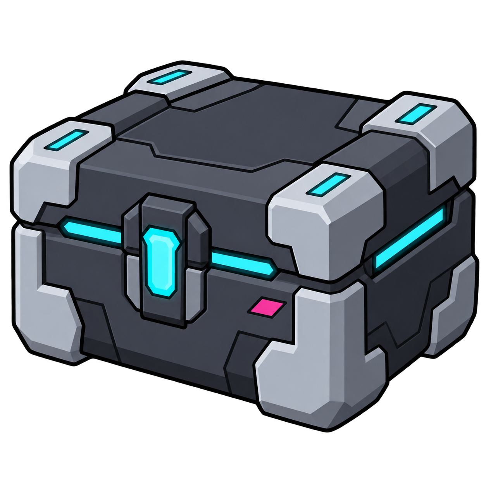
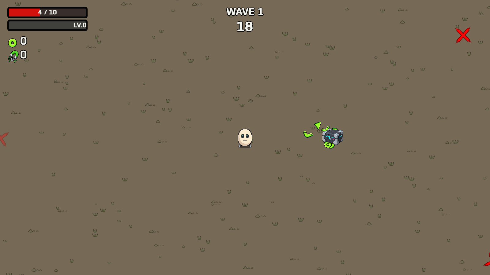

One matching design for the world pickup and pending-reward icon. Graphite armor, cyan light strips, clean black outlines, transparent background.


Pickup and reward checks · Generation prompt (built-in imagegen)